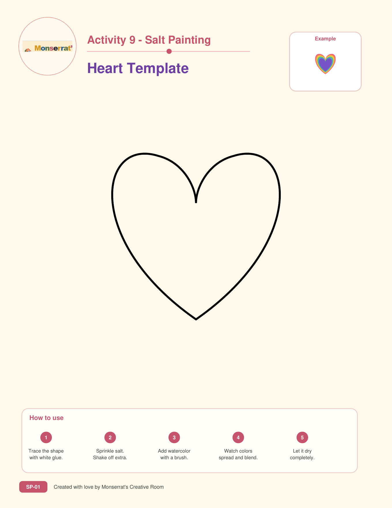

Crafts
Simple, beautiful projects using materials families may already have at home.
Welcome to the
A warm space for crafts, art activities, printable projects, and creative ideas families can enjoy together.
Simple, beautiful projects using materials families may already have at home.
Ready-to-use coloring pages, templates, activity sheets, and creative prompts.

🖨️ Download the Salt Painting PackCreate colorful spinning masterpieces while learning about motion, symmetry, and color mixing.
🖨️ Download the Spin Art PackCreate colorful animal masks using paper plates and simple craft supplies. This activity encourages imagination, storytelling, and fine motor skills.
Create a colorful window decoration using tissue paper and contact paper. Children can explore color, light, transparency, creativity, and fine motor skills.
📄 Download the Tissue Paper Suncatcher GuideCreative ideas for holidays, seasons, celebrations, and special family moments.